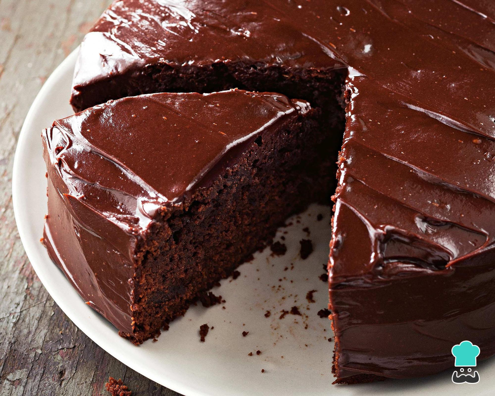

bolo de chocolate
ingredientes para massa:
- 4 vos
- 4 colheres (sopa) de chocolate em pó
- 2 colheres (sopa) de manteiga
- 3 xícaras (chá) de farinha de trigo
- 2 xícaras (chá) de açúcar
- 2 colheres (sopa) de fermento
- 1 xícara (chá) de leite
modo de preparo:
Massa:
- 1. Em um liquidificador adicione os ovos, o chocolate em pó, a manteiga, a farinha de trigo, o açucar e o leite, depois bata por 5 minutos.
- 2. adicione o fermento e misture com uma espátula delicadamente.
- 3. em uma forma untada, despeje a massa e asse em forno médio (180 ºC) preaquecido por cerca de 40 minutos. não esqueça de usar uma forma alta
para essa receita: como leva duas colheres de fermento, ela cresce bastante! outra solução pode ser colocar apenas uma colher de fermento e manter
a sua receita em uma forma pequena.
ingredientes para calda:
- 2 colheres (sopa) de manteiga
- 7 colheres (sopa) de chocolate em pó
- 2 latas de creme de leite com soro
- 3 colheres (sopa) de açúcar
modo de preparo:
- 1. em uma panela, aqueça a manteiga e misture o chocolate em pó ate que esteja homogênio.
- 2. acrescente o creme de leite e misture bem até obter uma consistência cremosa.
- 3. desligue o fogo e acrescente o açucar.
